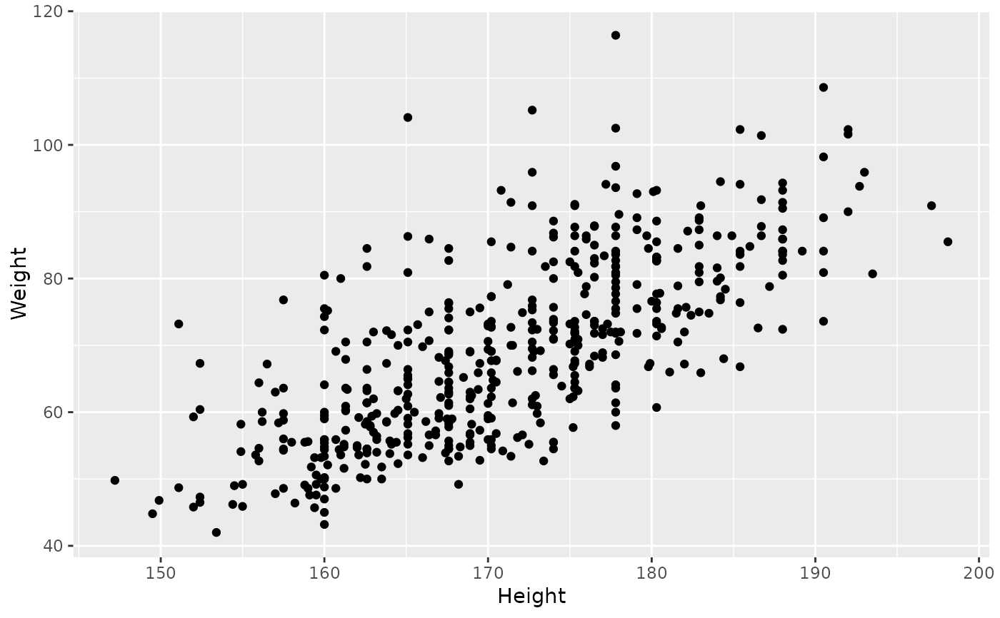
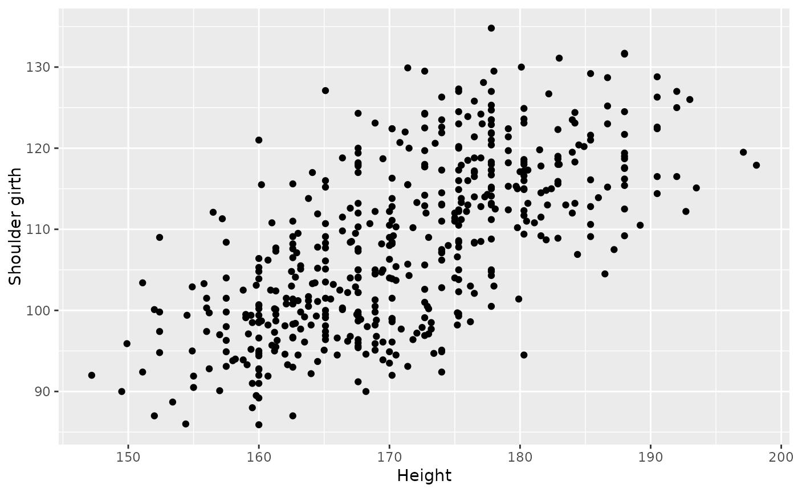

Body girth measurements and skeletal diameter measurements, as well as age, weight, height and gender, are given for 507 physically active individuals - 247 men and 260 women. These data can be used to provide statistics students practice in the art of data analysis. Such analyses range from simple descriptive displays to more complicated multivariate analyses such as multiple regression and discriminant analysis.
bdims
Format
A data frame with 507 observations on the following 25 variables.
- bia_di
A numerical vector, respondent's biacromial diameter in centimeters.
- bii_di
A numerical vector, respondent's biiliac diameter (pelvic breadth) in centimeters.
- bit_di
A numerical vector, respondent's bitrochanteric diameter in centimeters.
- che_de
A numerical vector, respondent's chest depth in centimeters, measured between spine and sternum at nipple level, mid-expiration.
- che_di
A numerical vector, respondent's chest diameter in centimeters, measured at nipple level, mid-expiration.
- elb_di
A numerical vector, respondent's elbow diameter in centimeters, measured as sum of two elbows.
- wri_di
A numerical vector, respondent's wrist diameter in centimeters, measured as sum of two wrists.
- kne_di
A numerical vector, respondent's knee diameter in centimeters, measured as sum of two knees.
- ank_di
A numerical vector, respondent's ankle diameter in centimeters, measured as sum of two ankles.
- sho_gi
A numerical vector, respondent's shoulder girth in centimeters, measured over deltoid muscles.
- che_gi
A numerical vector, respondent's chest girth in centimeters, measured at nipple line in males and just above breast tissue in females, mid-expiration.
- wai_gi
A numerical vector, respondent's waist girth in centimeters, measured at the narrowest part of torso below the rib cage as average of contracted and relaxed position.
- nav_gi
A numerical vector, respondent's navel (abdominal) girth in centimeters, measured at umbilicus and iliac crest using iliac crest as a landmark.
- hip_gi
A numerical vector, respondent's hip girth in centimeters, measured at at level of bitrochanteric diameter.
- thi_gi
A numerical vector, respondent's thigh girth in centimeters, measured below gluteal fold as the average of right and left girths.
- bic_gi
A numerical vector, respondent's bicep girth in centimeters, measured when flexed as the average of right and left girths.
- for_gi
A numerical vector, respondent's forearm girth in centimeters, measured when extended, palm up as the average of right and left girths.
- kne_gi
A numerical vector, respondent's knee diameter in centimeters, measured as sum of two knees.
- cal_gi
A numerical vector, respondent's calf maximum girth in centimeters, measured as average of right and left girths.
- ank_gi
A numerical vector, respondent's ankle minimum girth in centimeters, measured as average of right and left girths.
- wri_gi
A numerical vector, respondent's wrist minimum girth in centimeters, measured as average of right and left girths.
- age
A numerical vector, respondent's age in years.
- wgt
A numerical vector, respondent's weight in kilograms.
- hgt
A numerical vector, respondent's height in centimeters.
- sex
A categorical vector, 1 if the respondent is male, 0 if female.
Source
Heinz G, Peterson LJ, Johnson RW, Kerk CJ. 2003. Exploring Relationships in Body Dimensions. Journal of Statistics Education 11(2).
Examples
